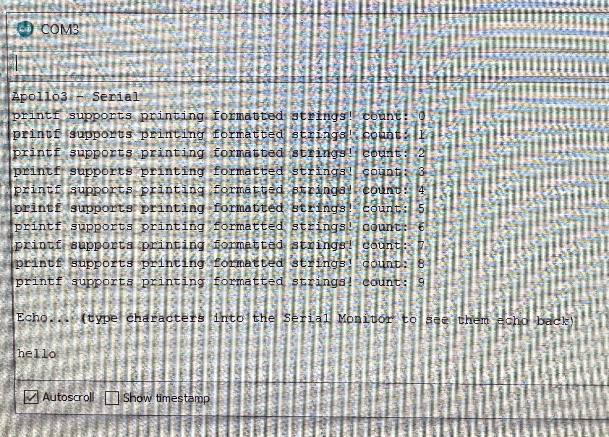
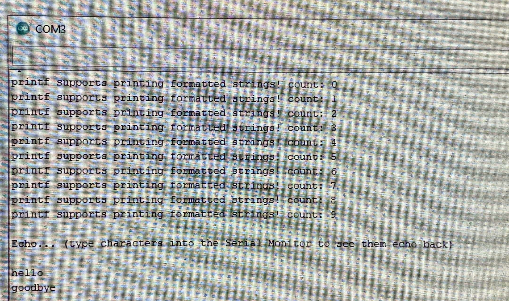

Microcontrollers are an essential part of robotics; they act as the robot's interface to the world and its motherboard. In this class, we will be using the SparkFun RedBoard Artemis Nano board to implement various robotics projects. Despite being small, lightweight, and inexpensive, it has some impressive features including Arduino IDE compatibility, 4 I2C buses, and 2 SPI buses.
The purpose of Lab 1 was to get familiar with the Artemis board and the Arduino IDE by implementing examples included in Apollo3 libraries.
To run these examples, connect the Artemis board to a computer, typically through a USB-A or USB-C port. Upload the Arduino file to the board. For files that utilize the serial terminal, check that the terminal's baud rate matches the baud rate displayed in the setup() function.
This Arduino file blinks the blue LED on the Artemis board by turning it on and off periodically. This video shows LED blinking on the Artemis board.
This Arduino file demonstrates how the serial monitor works. Data is relayed through one of the Artemis' UART peripherals. In this example, a variable called count is incremented ten times and its value is printed to the serial monitor. After this task, the user can input a string and see it printed in the serial monitor. In this first image, the value of count in displayed. I also typed the word "hello" and it is printed below the values of count
In this second image, I typed the word "goodbye" and it is printed on the next line under "hello."
While sending strings across the Artemis' UART peripheral seems instantaneous to us, a serial print is a relatively expensive task.
In the Analog Read example, the Artemis' ADC converter reads analog voltages. On the Artemis board, analog voltages can be read in four different ways: differential pairs, the internal die temperature, the internal VCC voltage, and the internal VSS voltage. This example prints each of these values to the serial monitor.
In this video, I show how Artemis senses the warmth of my hand. Before touching the microcontroller, the temperature reads about 32000 on the serial monitor. This value corresponds to the internal die temperature. After holding the microcontroller for a few seconds, the temperature reads about 33000. There is a brief delay because it takes time for the heat from my hand to transfer to the microcontroller.
This Apollo3 example demonstrates the Artemis boards' microphone. It displays the loudest (most powerful) frequency heard to the serial monitor.
In this video, I play various notes on a piano synthesizer. The serial monitor displays the changing frequencies which correspond to different notes.
After working through these examples, we are acquainted with the Artemis board's features and we are ready to start writing our own code.